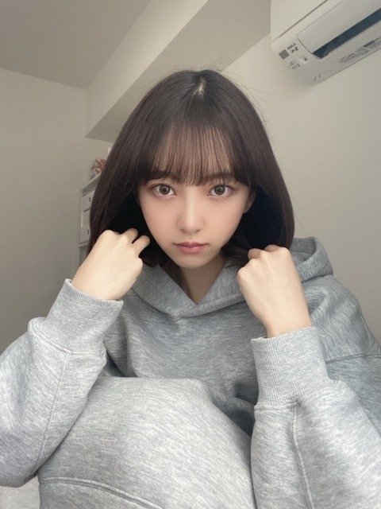
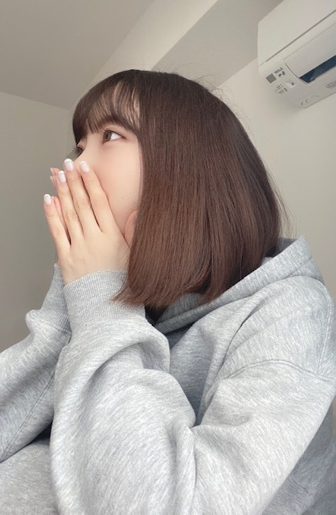

2020/0429Wed空が綺麗です
ぎりぎり、こんにちは


2020/0428Tueいつかのはなし


2020/0426Sunplaylist
昨日は寝る前に
今日はプリティプリンセスを
アンハサウェイさん初主演の作品で
普通に暮らしていた女の子が実は
プリンセスだったというお話です
すっぴんボサボサヘアから
好きすぎて尊すぎて
鳥肌がたって泣けてきます...
意識やメイクで女の子はうんと可愛くなれる
そんな魔法みたいなシーン
プリティプリンセスの世界観を


キラキラプリンセスになる
最後のお庭のシーンも素敵なの...
大好きな作品の1つです

さて、
今日は私の
[ 最近よく聴くプレイリスト ]
普段、曲を聴くときは
歌詞を見ながら聴くことが多いのですが
歌詞の意味を考えたり作詞した人の気持ちに
なってみたり歌詞の世界観に浸ってみたり...
音楽1つで 気分があがったり
悲しい気持ちが軽くなったり
私の何気ない日常には
音楽は、必要不可欠です
みなさんはどんな曲を聴きますか？
" 洋楽 "
I AM / Hilary Duffさん
if you come back / Blueさん
Love is easy / McFlyさん
All About you / Mc Flyさん
Permission / New Hope Clubさん
Medicine / New Hope Clubさん
Let Me Down Slow / New Hope Clubさん
Love story / Taylor Swiftさん
You Belong With Me / Taylor Swiftさん
I Love Loving You / The Vampsさん
Just my type / The Vampsさん
Another World / The Vampsさん
Personal / The Vampsさん
One thing / One Directionさん
イギリスのバンドが昔から
姉の影響で好きですね☺︎
MVもいい感じのゆるさがオシャレです
" 邦楽 "
永遠はきらい / 上白石萌音さん
リフレクション / 伊藤恵里さん
Flavor Of Life / 宇多田ヒカルさん
漂白 / あいみょんさん
テレパしい / あいみょんさん
ら、のはなし / あいみょんさん
好きって言ってよ / あいみょんさん
正夢 / スピッツさん
メッセージ / チャットモンチーさん
バスロマンス / チャットモンチーさん
染まるよ /チャットモンチーさん
消えない星 / チャットモンチーさん
例えば、 / チャットモンチーさん
4秒 / aikoさん
サイダー / aikoさん
星のない世界 / aikoさん
カタオモイ / Aimerさん
花束 / back numberさん
SISTER / back numberさん
光の街 / back numberさん
僕の名前を / back numberさん
泡と羊 / back numberさん
世田谷ラブストーリー / back numberさん
頬を濡らす雨のように / backnumberさん
one room / back numberさん
リッツパーティー / back numberさん
だいじなこと / back numberさん
march / back numberさん
シーグラス(カバー) / back numberさん
花の名 / BUMP OF CHICKENさん
そっけない / RADWIMPSさん
祝祭 / RADWIMPSさん
グランドエスケープ / RADWIMPSさん
夢灯籠 / RADWIMPSさん
スパークル / RADWIMPSさん
なんでもないや / RADWIMPSさん
One / RIP SLYMEさん
黄昏サラウンド / RIP SLYMEさん
Tales / RIP SLYMEさん
パール / THE YELLOW MONKEYさん
この恋のかけら / THE YELLOW MONKEYさん
美影意志 / UVERworldさん
浮世CROSSING / UVERworldさん
Driving today / YUIさん
No way / YUIさん
I will love you / YUIさん
It's all right / YUIさん
Simply white / YUIさん
LIFE / YUIさん
Understand / YUIさん
ビスケット / YUKIさん
エスケープ / 手嶋葵さん
朝ごはんの歌 / 手嶋葵さん
是非、歌詞を見ながら
聞いていただきたい曲ばかり!
" KPOP "
Bad boy / Red Velvetさん
Peek-A-Boo / Red Velvetさん
SAPPY / Red Velvetさん
Psycho / Red Velvetさん
Umpah Umpah / Red Velvetさん
DUN DUN / EVERGLOWさん
NO LIE / EVERGLOWさん
Twenty-three / IUさん
BBIBBI / IUさん
Blueming / IUさん
Hey.Bae.Like it. / IZ*ONEさん
Up / IZ*ONEさん
Airplane / IZ*ONEさん
SPACESHIP / IZ*ONEさん
LIAR LIAR / OH MY GIRLさん
TURTLE / TWICEさん
Wishing / TWICEさん
Feel Special / TWICEさん
breakthrough / TWICEさん
Beautiful / Wanna Oneさん
Say yes / LOCO.punchさん
All With You / テヨンさん
麗 を見終わって、今は
恋するジェネレーション
を観ています
泣けるしキュンキュンするし良きです☺︎

またいい歌があったらご紹介します!
2020/0424Frimusic
みなさんの好きな歌を教えてください☺︎
JPOP 洋楽 ジャンルはなんでも構いません!

ここ最近は外出しないので1年間有効の
コンタクトをつけています
目の色が新鮮です

コメント見てます全部
ありがとうございます
では
2020/0424Fri髪が伸びてきちゃいました
こんにちは




ずっとおうちにいるので
部屋着は色々着てますが
なんだかんだパーカーにおちつきます☺︎
パーカー着たままパーカーをネットで買う日々
では!
すこしずつですが、質問に答えていきます
1000件以上のコメント、
最近メンバーと連絡取ってますか～？？
→もちろん！ビデオ電話したりします☺︎
ジェイソンステイサム主演の
おすすめの映画教えてください！
→たくさんありますが個人的には
MEG ザモンスターの時が圧倒的紳士で好きです
未央奈がメイクする時に1番こだわる
ポイントを教えてほしい
→コンプレックスをいかにメイクで
カバーするか、なので私の場合
・つり目を優しく見せるために
アイラインはたれ目風に長く引き
目尻のシャドウは優しいブラウンで統一
・ノーズシャドウで鼻筋をスッキリ見せる
・目の重心を下げるために上まつげはあげすぎない
・チークは丸く優しくいれる
・唇の血色ははっきりと
・アゴにシェーディングを入れて
鋭利な顎を短くみせる
・頬骨のところにハイライト
美の秘訣は⁇
→24時間、美を意識すること
美しいと感じるものを常に見たり
感じたりするようにしていて
今はお家にいるのでずっとネットサーフィンしてます
例えば
・かわいい人が出てるドラマや映画
・トキメクきらきらなメイク画像
・ハリウッドスターのドレスアップ画像
・絵画 特に水彩画
・おしゃれなインテリア画像
・世界中の美人の画像
・洋服 最近はレースグローブが好き
・ブランドのロゴ画像
・ヨーロッパの女の子のヘアアレンジ画像
・キラキラネイル
とか! 待ち受けは今はエルファニングさんと
オードリーヘップバーンさんのコラージュ画像で
モチベ上げてます
あとお休みの日でもメイク研究してみたり
ファッションショーしてみたり!
気になった美容法もとにかく試します❤︎
朝と夜お風呂に入る派ですか？
→夏は朝も入りますが基本、夜のみ!
洗い流しすぎてもいけないみたい
最近読んだ漫画は何でしょうか？
→たまのごほうび です
ハマりました
BUMP OF CHICKENさんの曲で何が好きですか？
→花の名
心が折れそうな時や、頑張る方向が
わからなくなってしまった時など、
どうやって自分自身を元気づけていますか？
→みんな辛い思いをしながら
頑張ってるんだから自分だけ...って
マイナスに考えず、踏ん張っています
でも時には自分に対して
優しくしてあげるのも大事かな
家にいる時間が多くて運動不足
になってきてるのですが、スタイルとか
体重の維持のためにしてることありますか？
→ダンス動画見ながらダンスしてます!
続きはまた答えます☺︎

またね